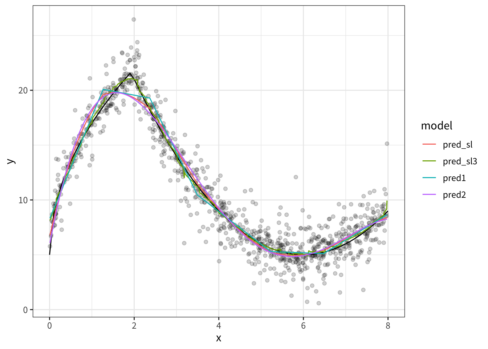

library(tidyverse)
library(rsample)
library(sl3)
library(future)
library(earth)
theme_set(theme_bw(base_family = 'Noto Sans JP'))
# 並列化
plan(multisession(workers = 5))文献
Naimi, Ashley I. & Laura B. Balzer, 2018, “Stacked Generalization: An Introduction to Super Learning,” European Journal of Epidemiology, 33(5): 459–64, (https://doi.org/10.1007/s10654-018-0390-z).
パッケージ読み込み
データ生成
\[\begin{align} Y = 5 + 4\sqrt{9x} \times I(x<2) + I(x\geq2) \times (|x-6|^{2}) + \epsilon \end{align}\]
- \(I()\)：Indicator function（TRUEなら1、FALSEなら0となる）
- \(\epsilon \sim \mathrm{Laplace}(0, 1)\)1
set.seed(12345)
data <- tibble(
x = runif(1000, 0, 8),
epsilon = rmutil::rlaplace(1000, 0, 1)
) |>
mutate(
y_truth = 5 + 4*sqrt(9 * x)*as.numeric(x<2) + as.numeric(x>=2)*(abs(x-6)^(2)),
y = y_truth + epsilon
)- データの確認（gamが優秀）
data |>
ggplot(aes(x, y)) +
geom_point(alpha = 0.3)+
geom_line(
data = tibble(
x = seq(0, 8, 0.1),
y = 5 + 4*sqrt(9 * x)*as.numeric(x<2) + as.numeric(x>=2)*(abs(x-6)^(2))
),
aes(x, y),
color = "black"
)+
geom_smooth(method = 'gam', formula = y ~ s(x, bs = 'cs'), se = FALSE)- cross-fitの準備
- データを5分割
df <-
vfold_cv(data, v = 5) |>
mutate(
train = map(splits, analysis),
test = map(splits, assessment)
)
df# 5-fold cross-validation
# A tibble: 5 × 4
splits id train test
<list> <chr> <list> <list>
1 <split [800/200]> Fold1 <tibble [800 × 4]> <tibble [200 × 4]>
2 <split [800/200]> Fold2 <tibble [800 × 4]> <tibble [200 × 4]>
3 <split [800/200]> Fold3 <tibble [800 × 4]> <tibble [200 × 4]>
4 <split [800/200]> Fold4 <tibble [800 × 4]> <tibble [200 × 4]>
5 <split [800/200]> Fold5 <tibble [800 × 4]> <tibble [200 × 4]>手動でSuper learner
- Cross-fitで各モデルの予測値を計算
res <-
df |>
mutate(
model_earth = map(
train, \(data)
earth(y ~ x, degree = 2, penalty = 3, nk = 21, pmethod = "backward", data = data)
),
model_lm = map(
train, \(data)
lm(y ~ poly(x, degree = 4), data = data)
),
pred_earth = map2(model_earth, test, \(x, y) predict(x, newdata = y)[,1]),
pred_lm = map2(model_lm, test, \(x, y) predict(x, newdata = y))
)- 各モデルの予測値を独立変数、アウトカムを目的変数とした回帰モデルを、Non-negative least squaresにより推定
- パフォーマンスの良いモデルにより大きい重みがつくように、重みを推定
weight <-
nnls::nnls(
A =
res |>
select(pred_earth, pred_lm) |>
unnest(cols = c(pred_earth, pred_lm)) |>
as.matrix(),
b = data$y
) |>
pluck('x')
weight[1] 0.2467513 0.5523356# weightを、足して1になるように基準化
weight_normalized <- weight / sum(weight)
weight_normalized[1] 0.3087915 0.6912085予測値の計算
- 全データを用いて、各モデルの予測値を計算
- 先ほど推定した重みを用いて、各モデルの予測値を組み合わせた予測値を計算
# サンプル全体での予測値を計算
model1 <- earth(y ~ x, degree = 2, penalty = 3, nk = 21, pmethod = "backward", data = data)
model2 <- lm(y ~ poly(x, degree = 4), data = data)
result <-
data |>
mutate(
pred1 = predict(model1)[,1],
pred2 = predict(model2)
) |>
mutate(
pred_sl = weight_normalized[1]*pred1 + weight_normalized[2]*pred2
)
result# A tibble: 1,000 × 7
x epsilon y_truth y pred1 pred2 pred_sl
<dbl> <dbl> <dbl> <dbl> <dbl> <dbl> <dbl>
1 5.77 -1.86 5.05 3.19 5.21 4.84 4.96
2 7.01 1.16 6.01 7.18 6.36 6.57 6.51
3 6.09 -4.30 5.01 0.712 5.16 5.00 5.05
4 7.09 -0.353 6.19 5.83 6.56 6.75 6.69
5 3.65 0.465 10.5 11.0 9.98 11.0 10.7
6 1.33 -0.677 18.8 18.2 20.0 19.5 19.7
7 2.60 -1.05 16.6 15.5 17.5 16.8 17.0
8 4.07 0.535 8.71 9.25 8.73 8.90 8.85
9 5.82 7.05 5.03 12.1 5.20 4.85 4.96
10 7.92 2.30 8.68 11.0 8.52 8.20 8.30
# ℹ 990 more rows- 結果のプロット
result |>
pivot_longer(
cols = c(pred1, pred2, pred_sl),
names_to = 'model',
values_to = 'prediction'
) |>
ggplot(aes(x, y)) +
geom_point(alpha = 0.05)+
geom_line(aes(x, prediction, color = model))+
geom_line(
data = tibble(
x = seq(0, 8, 0.1),
y = 5 + 4*sqrt(9 * x)*as.numeric(x<2) + as.numeric(x>=2)*(abs(x-6)^(2))
),
aes(x, y),
color = "black"
)sl3でSuper learner
task <- sl3_Task$new(
data = data, outcome = "y", covariates = "x", outcome_type = 'continuous', folds = 5
)
sl_lib <-
Lrnr_sl$new(
learners = Stack$new(
Lrnr_earth$new(degree = 4),
Lrnr_gam$new(),
Lrnr_mean$new(),
Lrnr_xgboost$new(nrounds = 100, max_depth = 3, eta = 0.3),
Lrnr_bartMachine$new(serialize = TRUE)
),
metalearner = Lrnr_nnls$new(convex = TRUE)
)
fit <- sl_lib$train(task)serializing in order to be saved for future R sessions...done
serializing in order to be saved for future R sessions...done
serializing in order to be saved for future R sessions...done
serializing in order to be saved for future R sessions...done
serializing in order to be saved for future R sessions...done
serializing in order to be saved for future R sessions...donefit[1] "Cross-validated risk:"
Key: <learner>
learner coefficients MSE se fold_sd
<fctr> <num> <num> <num> <num>
1: Lrnr_earth_4_3_backward_0_1_0_0 0.0000000 2.439980 0.1491178 0.5590197
2: Lrnr_gam_GCV.Cp 0.6423803 2.156928 0.1368631 0.5163999
3: Lrnr_mean 0.0000000 30.590277 1.0519860 2.2451721
4: Lrnr_xgboost_100_1_3_0.3 0.0000000 2.437071 0.1515221 0.5109703
5: Lrnr_bartMachine_TRUE 0.3576197 2.215505 0.1425014 0.4516937
fold_min_MSE fold_max_MSE
<num> <num>
1: 1.969880 3.393874
2: 1.767867 3.055205
3: 27.834174 33.991665
4: 2.098941 3.308421
5: 1.895672 3.001563result |>
mutate(
pred_sl3 = fit$predict(task = task)
) |>
pivot_longer(
cols = c(pred1, pred2, pred_sl, pred_sl3),
names_to = 'model',
values_to = 'prediction'
) |>
ggplot(aes(x, y)) +
geom_point(alpha = 0.05)+
geom_line(
data = tibble(
x = seq(0, 8, 0.1),
y = 5 + 4*sqrt(9 * x)*as.numeric(x<2) + as.numeric(x>=2)*(abs(x-6)^(2))
),
aes(x, y),
color = "black"
)+
geom_line(aes(x, prediction, color = model))
Footnotes
ラプラス分布。二重指数分布（double exponential distribution）とも呼ばれる。論文中ではdoubly-exponential distributionと表記されている。↩︎